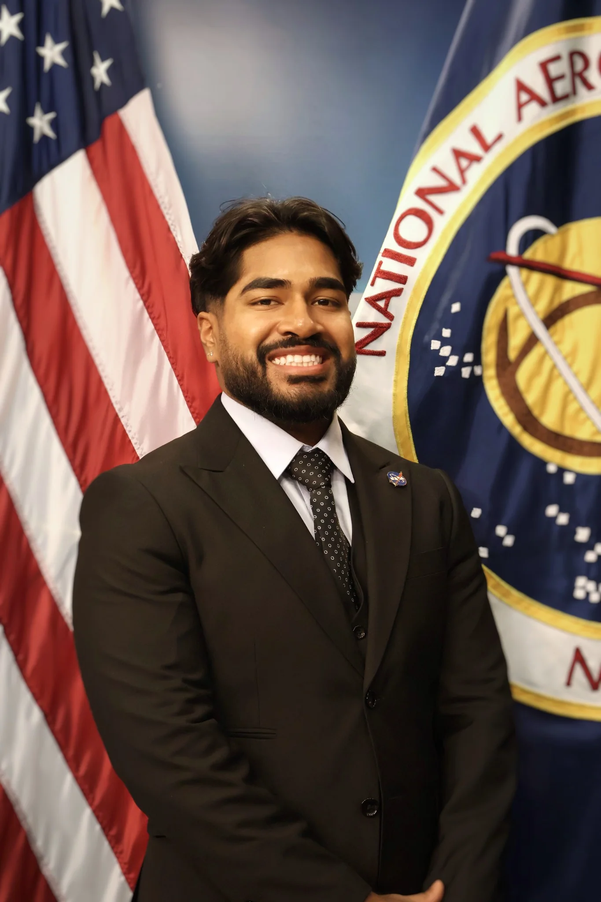
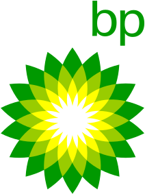
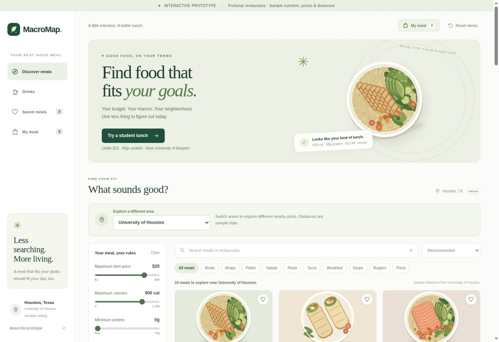
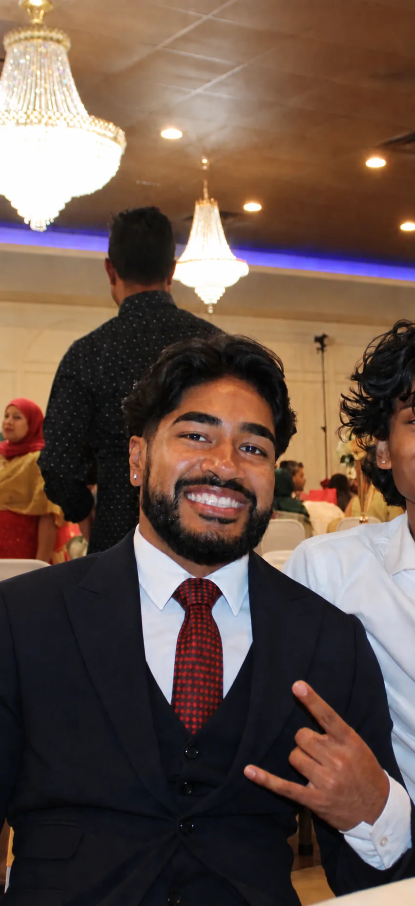
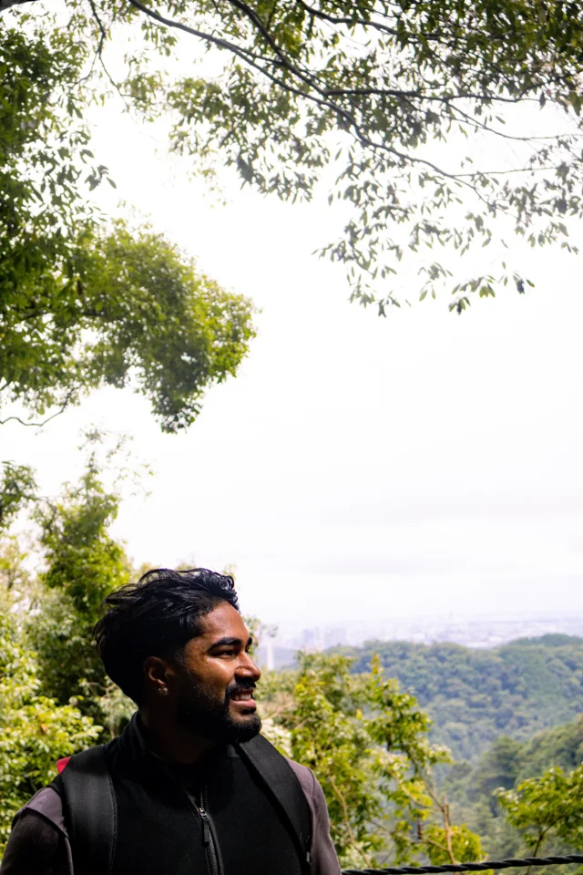
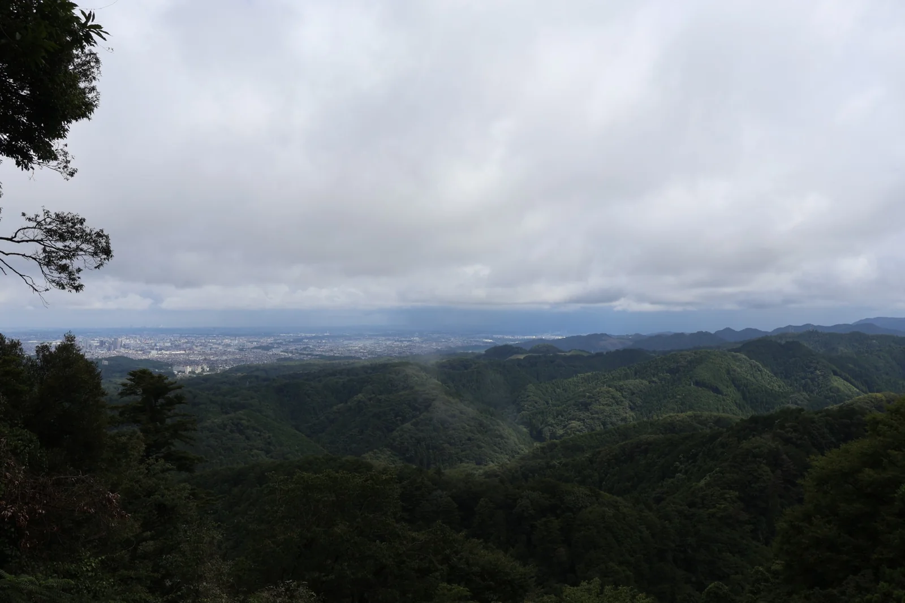
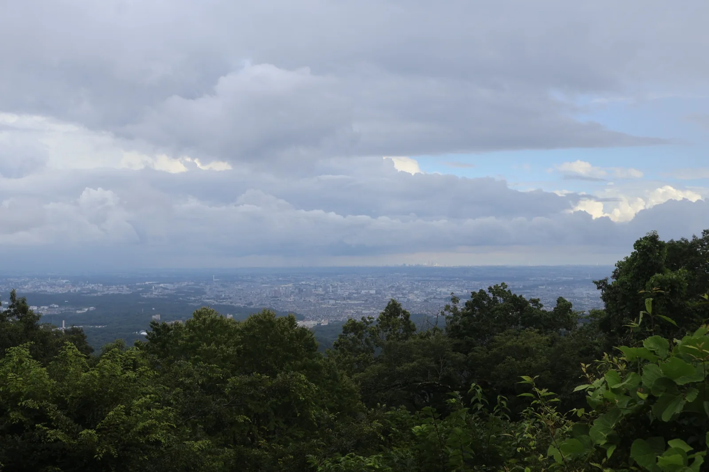

NASATECHNOLOGY
Improve access.
Support better decisions.
Knowledge systems, request tracking, and AI tools.
BUSINESS STUDENT · HOUSTON, TEXAS
Building a career in business development,
energy, and technology.

EXPERIENCE ACROSS

BUSINESS. TECHNOLOGY. PEOPLE.
Knowledge systems, request tracking, and AI tools.
Contract analysis and supplier accountability.
People, safety, and more efficient workflows.
Market research across energy and emerging technology.
FROM CONCEPT TO PROTOTYPE
MacroMap.A class idea turned into a working meal discovery prototype.

Start with nutrition goals, a budget, and your Houston area.
A working class prototype. Select a step, then try it yourself.
EXPERIENCE WITH PURPOSE
My goal is to connect business needs with practical solutions.
Each role has strengthened how I analyze, lead, and deliver.
Schneider Electric
bp · NASA
Amazon · Enterprise
SEKCO · DoorDash
Macquarie · Home Depot
Netbrands
LEADERSHIP IN ACTION
CO FOUNDER & VP / COUGAR PRODUCT
LEADERSHIP & COMMUNITY
Mentoring students. Giving back.
Creating opportunities to grow together.

Hi, I’m Mostaque.
BANGLADESH → HOUSTON
I moved from Bangladesh to the U.S. at 11. As a first generation business student, I’m building a career that combines strong relationships with practical problem solving. My goal is to create value at work and give back to my family and community.


LIFE BEYOND THE OFFICE
Running, photography, and time outside keep me grounded.
LET’S CONNECT
I welcome conversations about business development, energy, and technology opportunities.
Let’s talk